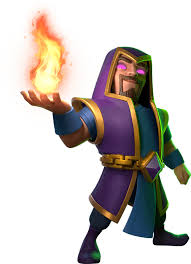

Qual a Função de cada Mago?
Mago de Gelo

O Mago de gelo é uma otima carta de suporte para defesa. Devido ao seu baixo custo e sua desaceleração em tropas inimigas, ele faz com que suas outras tropas consigam defender muito mais facilmente o ataque inimigo.
Mago Elétrico

O Mago elétrico pode ser usado tanto na defesa quanto no ataque. Por conta do seu reset nas cartas inimigas, além dele atrasar as cartas na defesa, ele também serve como suporte para seu tanque no ataque, pois evita possíveis ante tanques como Torre Inferno e Dragão Infenal.
Mago
O Mago é uma carta de alto dano em área, porém com um custo alto. ele é ótimo como um suporte para sua condição de vitória, eliminando hordas como guangue de goblins, exército de esqueletos, horda de servos ou bárbaros.